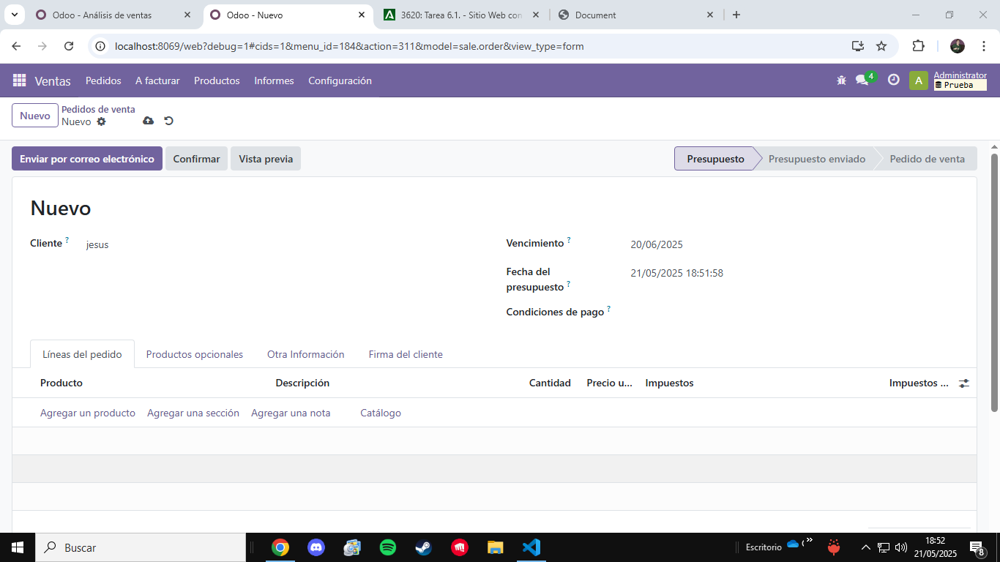
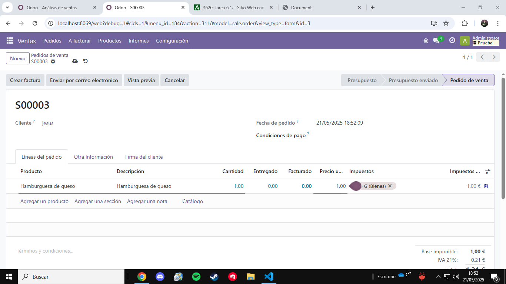
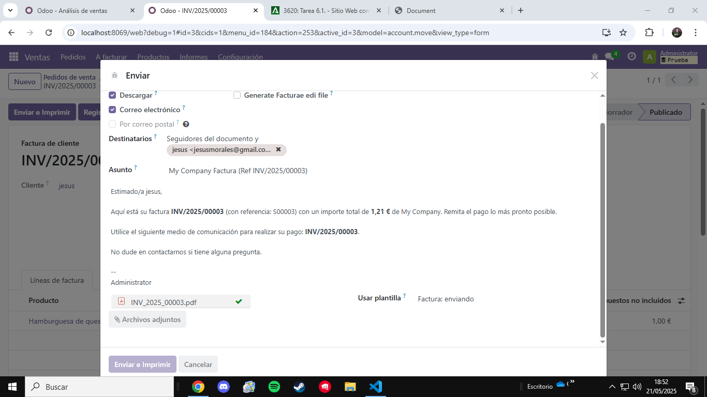
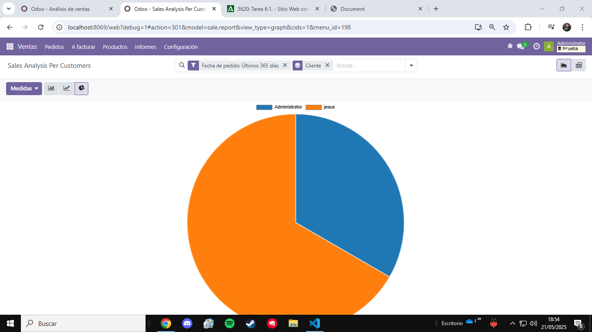
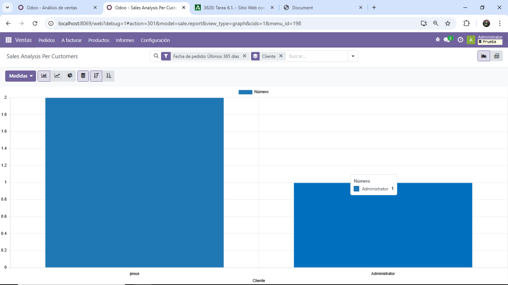

Odoo
Código abierto que ofrece una solución integral para administrar diferentes aspectos de un negocio
La instalacion de Odoo es sencilla solo tendremos que darle hacia delante en los pasos
Seguridad de Odoo
La seguridad de Odoo esta gestionada mediante privilegios y roles
- Grupos
- Reglas de acceso
- Reglas de registro
Se recomienda revisar periodicamente los permisos
Los roles y permisos son esenciales para mantener
la seguridad y el orden dentro de una empresa. Permiten controlar quién puede acceder y
modificar información, asegurando que cada usuario tenga solo lo necesario para su trabajo.
Por lo tanto una buena gestion de estos mejorar enormememnte la seguridad de tu empresa
Los informes nos ayudaran a saber que cliente pide mas productos cual a facuturado ya el producto etc
Aqui vamos a ver una guia
Aqui creamos un producto que en este caso es hamburguesa de queso
Realizamos un nuevo pedido a jesus
 Una vez el pedido envia y impreso se nos guardara en informes
Aqui podemos ver de manera grafica como jesus tiene mas pedidos que administrador
